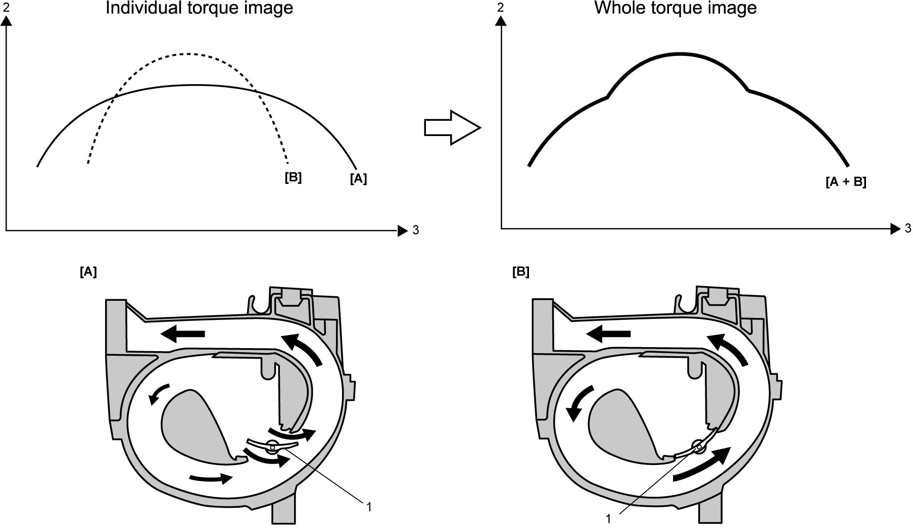

1D
| IMT System Description |

 "Expand image")
| [A]: | IMT valve open | 1. | IMT valve | 3. | Engine speed |
| [B]: | IMT valve closed | 2. | Engine torque |
The IMT system varies the effective intake pipe length by opening and closing the IMT valve to improve air volumetric efficiency.
As the intake valve in the cylinder head is opened and closed repeatedly, intake air pulsation occurs. If the intake valve is opened when air pressure is momentarily at the maximum level, the intake air volumetric efficiency increases. This momentary maximum air pressure depends on the effective intake pipe length.
When IMT valve is fully open [A]:
The effective intake pipe length is shorter. Engine torque in the low engine speed range and the high engine speed range improves, while it drops in the middle engine speed range.
When IMT valve is totally closed [B]:
The effective intake pipe length is longer. Engine torque in the low engine speed range and the high engine speed range drops, while it improves in the middle range.
IMT system utilizes this characteristic of engine. IMT valve is closed in the middle engine speed range, and opened in the low and high engine speed ranges.
In this way, engine torque is improved in whole engine speed range.